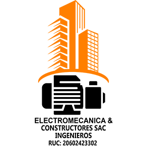

Servicio
Aguas Residuales
Limpieza y mantenimiento para cisternas, pozos sépticos y sumideros, con protocolos de seguridad para reducir obstrucciones, olores y riesgos sanitarios.

EMCSAC Electromecánica & Constructores SACLimpieza y mantenimiento para cisternas, pozos sépticos y sumideros, con protocolos de seguridad para reducir obstrucciones, olores y riesgos sanitarios.